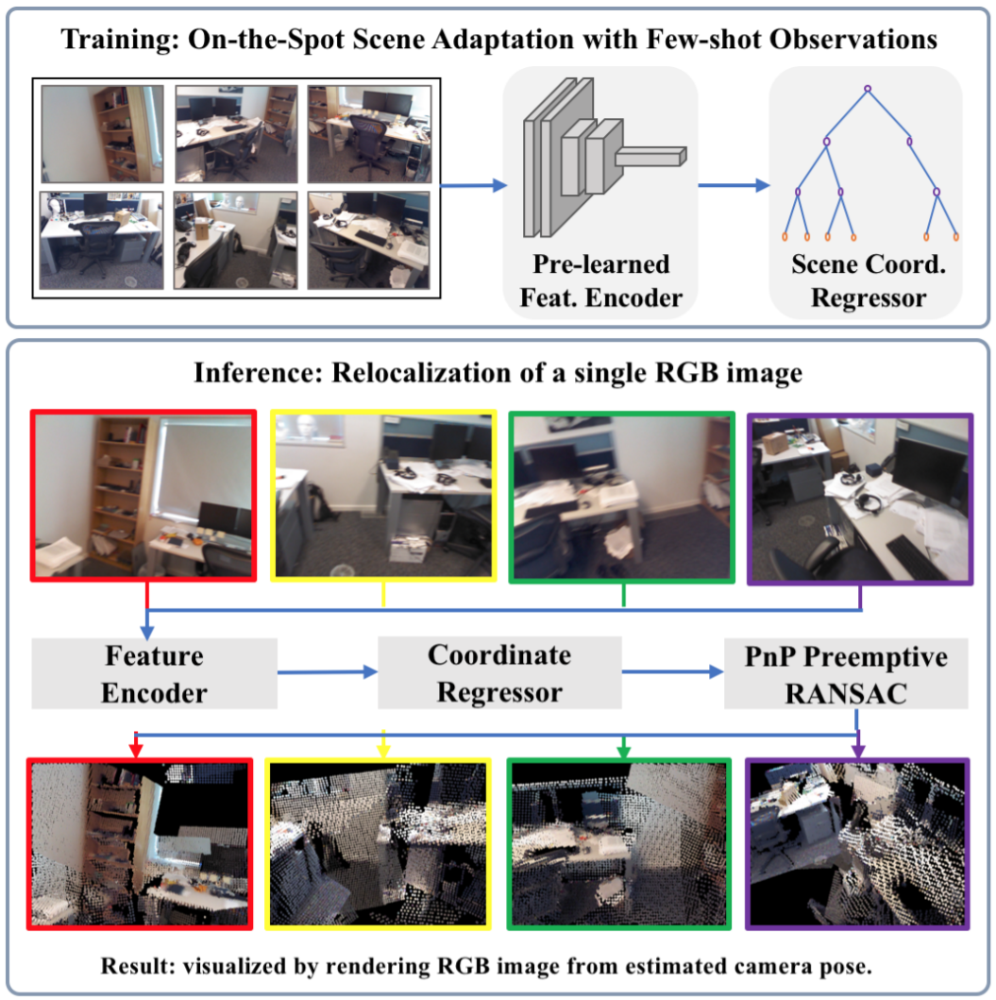

I am a Ph.D. student advised by Prof. Baoquan Chen at the Interdisciplinary Research Center (IRC), Shandong University (SDU). My research interests lie in the field of computer graphics, computer vision and robotics, in particular 3D reconstruction and camera localization.
Currently, I am a visiting student in the Visual Computing and Learning Lab, The Center on Frontiers of Computing Studies (CFCS), Peking University (PKU), supervised by Prof. Baoquan Chen.
I was also a research intern in the Advanced Innovation Center for Future Visual Entertainment (AICFVE) led by Prof. Baoquan Chen, work with Prof. Kai Xu, in Beijing Film Academy (BFA).

Decoupling Features and Coordinates for Few-shot RGB Relocalization
Siyan Dong, Songyin Wu, Yixin Zhuang, Shanghang Zhang, Kai Xu, Baoquan Chen
arXiv:1911.11534

Multi-Robot Collaborative Dense Scene Reconstruction
Siyan Dong, Kai Xu, Qiang Zhou, Andrea Tagliasacchi, Shiqing Xin, Matthias Nießner, Baoquan Chen
ACM Transactions on Graphics (SIGGRAPH) 2019
Paper
/Project
/Code